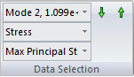
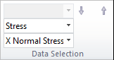
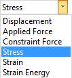
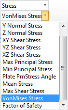
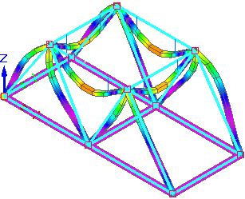
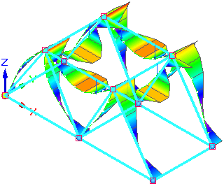
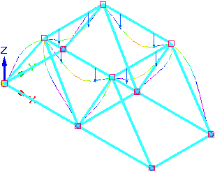

Plot results
You can plot a variety of analysis results using any of the commands in the Simulation Results environment.
-
In the Simulation Results environment, display the Home tab→Data Selection group.
This group contains the plot data selection options for the active study. The top list is available only for normal modes studies.
Example:Study type
Example
Normal Modes

Linear Static, Buckling, Thermal

-
Select the results you want to see from the Data Selection lists.
The options that are available depend on the type of study and the processing options selected in the Create Study dialog box.
 Note:
Note:Result modes are available
only for the Normal Modes study type.

-
On the Home tab→Contour Style group, select one of the Contour styles.

The contour style affects how the result colors are displayed on the model.
-
Select Home tab→Show group→Display Options
 , and then choose the model display.
, and then choose the model display.To
Do this
Show the selected contour type on the model., such as dynamic iso contours.

Select Contour.

Show the deformed part in the plot.

Select Deformation.

Display the deformed part superimposed on the undeformed model.

Select Undeformed Model and Deformation.

Display plate thickness on surfaces.

Select Plate Thickness.

Display beam diagrams resulting from a linear static study of a structural frame model using the beam mesh type.

Tip:To display the square nodes shown in the beam diagram images, use the Home tab→Relate group→Relationship Handles command in the Frame environment.
Select Beam Diagram and Beam Cross Section.

For more information, see Beam diagrams, Beam reaction component plots, and Beam stress component plots.
You can review the beam properties for a beam cross section to understand the results of a structural frame model analysis.

Select only Beam Diagram.

Clear the Beam Cross Section and Beam Diagram check boxes.
-
Select results review options:
To
Do this
Display minimum and maximum value markers.
Select these check boxes on the Color Bar tab→Show group:
-
Min Marker
-
Max Marker
Control the type and amount of deformation.

Select Home tab→Deformation group:

Change the appearance of faces and edges in the model.


Select options in the Display tab→Primary Display group and Display tab→Undeformed Display group.

Change the numeric value format and the number of decimal places.


Select options in the Color Bar tab→Format group.
Tip:You can set Number Format=Automatic so that Solid Edge Simulation selects the optimal numerical format for node values independent of color bar values.
Note:To learn about these and other results display aids, see:
-
The data selection types that you see in your model are based in part on the Results Options for studies selected in the Create Study (or Modify Study) dialog box. To learn how to add more nodal or elemental results plots to your study, see Add result plots to the study.
Learn more
Plotting resultsResult plots for mixed mesh models
Displacement component plots
Stress component plots
Constraint component plots
Strain component plots
Beam properties
Beam reaction component plots
Beam stress component plots
Beam diagrams
Temperature plots
Heat flux component plots
Applied temperature plots